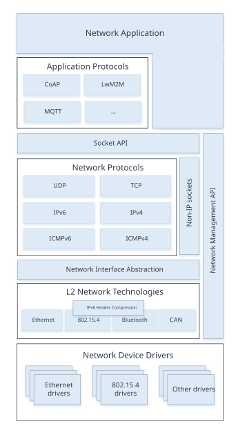
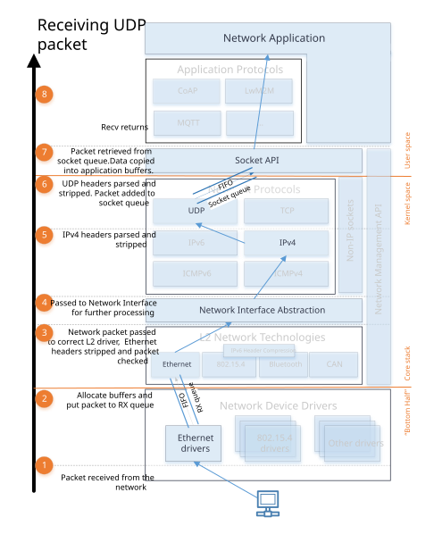
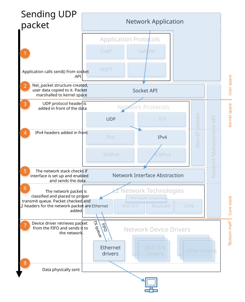

网络协议栈架构
Zephyr 网络协议栈是专为 Zephyr OS 设计的原生网络协议栈。它由多个层组成，每一层都为其他层提供特定的服务。网络协议栈的功能可以通过 Kconfig 选项进行高度配置。
网络协议栈的高层概览

网络协议栈是分层的，由以下部分组成：
网络应用程序。 网络应用程序可以使用提供的应用层协议库，也可以直接访问 BSD 套接字 API，以建立网络连接、发送或接收数据以及关闭连接。应用程序还可以使用 网络管理 API 配置网络并设置相关参数，例如网络链路选项、启动扫描（如适用）、监听网络配置事件等。网络接口 API 可用于为网络接口设置 IP 地址、关闭网络接口等。
网络协议。 这部分提供各种协议的实现，例如
应用层网络协议，如 CoAP、LwM2M 和 MQTT。相关信息参见 应用协议章节。
核心网络协议，如 IPv6、IPv4、UDP、TCP、ICMPv4 和 ICMPv6。可以通过 BSD 套接字 API 使用这些协议。
网络接口抽象。 这部分提供所有网络接口共有的功能，例如关闭网络接口等。系统中可以有多个网络接口。详情参见 网络接口概述。
L2 网络技术。 这部分提供一套通用 API，用于向实际的网络设备发送数据和从中接收数据。详情参见 L2 概述。
这些网络技术包括 以太网、IEEE 802.15.4、Bluetooth、CANBUS 等。
其中部分技术支持 IPv6 报头压缩（6Lo），详情参见 RFC 6282。又如，IPv4 的 ARP（RFC 826）由 以太网组件 处理。
网络设备驱动。 实际的底层设备驱动负责网络数据包的物理发送和接收。
网络数据流
应用程序通常由一个或多个执行应用逻辑的 线程 组成。使用 BSD 套接字 API 时，会发生以下过程。

数据接收（RX）
设备驱动接收到一个网络数据包。
设备驱动分配足够的网络缓冲区来存储接收到的数据。网络数据包被放入相应的 RX 队列（由 k_fifo 实现）。默认情况下系统中只有一个接收队列，但最多可以有 8 个接收队列。这些队列以不同的优先级处理传入的数据包，详情参见 流量分类。由于设备驱动运行在中断上下文中，必须尽快完成处理，接收队列也起到了分离数据处理流水线（下半部）的作用。
随后网络数据包被传递给相应的 L2 驱动。L2 驱动可以检查数据包是否正确，并在需要时修改数据包，例如剥离 L2 报头和帧校验序列等。
数据包由网络接口处理。如果启用了
CONFIG_NET_STATISTICS，会收集网络统计信息。然后数据包被传递给 L3 处理。如果数据包基于 IP，L3 层会检查它是否为正确的 IPv6 或 IPv4 数据包。
接着，套接字处理程序找到该网络数据包所属的活动套接字，并将其放入该套接字的队列，从而将网络代码与应用程序分离。通常应用程序运行在用户空间上下文中，而网络协议栈运行在内核上下文中。
然后应用程序接收数据，并按需处理。应用程序应已使用 BSD 套接字 API 创建了用于接收数据的套接字。

数据发送（TX）
应用程序发送数据时应使用 BSD 套接字 API。
应用程序数据被准备好发送到内核空间，然后复制到内部的 net_buf 结构中。
根据套接字类型，在数据前面添加协议报头。例如，如果套接字是 UDP 套接字，则构造一个 UDP 报头并放在数据前面。
对于 UDP 或 TCP 数据包，会向网络数据包添加 IP 报头。
网络协议栈会检查网络数据包的网络接口是否已正确设置，并在数据排队等待发送之前确保该网络接口已启用。
然后网络数据包被分类并放入相应的发送队列（由 k_fifo 实现）。默认情况下系统中只有一个发送队列，但最多可以有 8 个发送队列。这些队列以不同的优先级处理要发送的数据包，详情参见 流量分类。发送数据包分类完成后，由相应的 L2 层模块检查数据包。L2 模块会对数据做额外检查，并为网络数据包创建所需的 L2 报头。如果一切正常，数据会交给网络设备驱动发送出去。
设备驱动将数据包发送到网络。
注意，在 TX 和 RX 数据路径中，队列（k_fifo）构成了分离点，数据在这些点上从一个 线程 传递到另一个线程。这些 线程 可能运行在不同的上下文中（内核 与 用户空间），并具有不同的 优先级。
网络数据包处理统计
关于网络处理统计信息，请参见 此处。